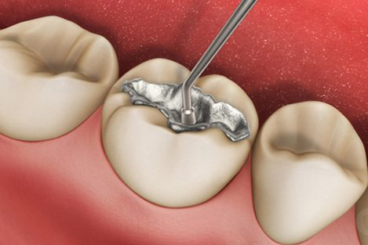
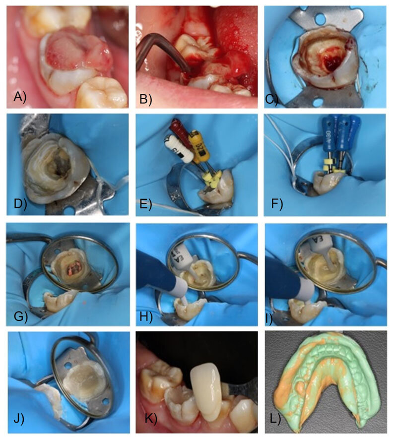
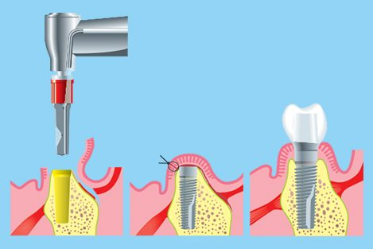
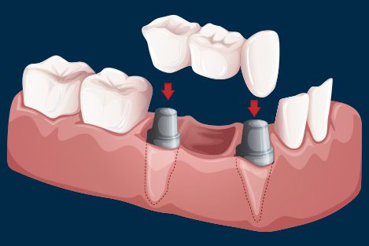
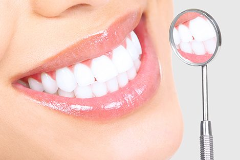
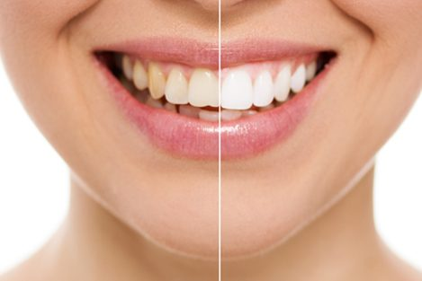

What We Provide

Restorations
A dental restoration or dental filling is a dental restorative material used to restore the function, integrity and morphology of missing tooth structure. The structural loss typically results from caries or external trauma. It is also lost intentionally during tooth preparation to improve the aesthetics or the physical integrity of the intended restorative material. Dental restoration also refers to the replacement of missing tooth structure that is supported by dental implants.
Painless Root Canal Treatment
A root canal is a treatment to repair and save a badly damaged or infected tooth. The procedure involves removing the damaged area of the tooth (the pulp), cleaning and disinfecting it, and then filling and sealing it. The common causes affecting the pulp are a cracked tooth, a deep cavity, repeated dental treatment to the tooth, or trauma. The term "root canal" comes from cleaning of the canals inside the tooth's root. Endodontic therapy, or root canal therapy, is a sequence of treatment for the infected pulp of a tooth which results in the elimination of infection and the protection of the decontaminated tooth from future microbial invasion. Root canals, and their associated pulp chamber, are the physical hollows within a tooth that are naturally inhabited by nerve tissue, blood vessels, and other cellular entities. Together, these items constitute the dental pulp. Endodontic therapy involves the removal of these structures, the subsequent shaping, cleaning, and decontamination of the hollows with small files and irrigating solutions, and the obturation (filling) of the decontaminated canals. Filling of the cleaned and decontaminated canals is done with an inert filling such as gutta-percha and typically a eugenol-based cement. Epoxy resin is employed to bind gutta-percha in some root canal procedures. Endodontics includes both primary and secondary endodontic treatments as well as periradicular surgery, which is generally used for teeth that still have potential for salvage.


Dental Implant
The primary use of dental implants is to support dental prosthetics. Modern dental implants make use of osseointegration, the biologic process where bone fuses tightly to the surface of specific materials such as titanium and some ceramics. The integration of implant and bone can support physical loads for decades without failure.
Dental Crown
A crown is a type of dental restoration which completely caps or encircles a tooth or dental implant. Crowns are often needed when a large cavity threatens the ongoing health of a tooth. They are typically bonded to the tooth using a dental cement. Crowns can be made from many materials, which are usually fabricated using indirect methods. Crowns are often used to improve the strength or appearance of teeth. While inarguably beneficial to dental health, the procedure and materials can be relatively expensive.


Dental Bridge
A bridge is a fixed dental restoration (a fixed dental prosthesis) used to replace a missing tooth (or several teeth) by joining an artificial tooth permanently to adjacent teeth or dental implants.
Cosmetic Dentistry
We understand that each smile is unique. Hence we devise an individual treatment plan for each patient depending on the size, shape, and color of their teeth, the color of their skin and eyes, and the shape of their lips and size of their jaws. This enhances their smile line, not just so it looks perfect, but also extremely natural.


Dental Scaling
Teeth cleaning (also known as prophylaxis, literally a preventive treatment of disease) is a procedure for the removal of tartar (mineralized plaque) that may develop even with careful brushing and flossing, especially in areas that are difficult to reach in routine tooth brushing. It is often done by a dental hygienist. Professional cleaning includes tooth scaling and tooth polishing, and debridement if too much tartar has accumulated. This involves the use of various instruments or devices to loosen and remove deposits from the teeth.